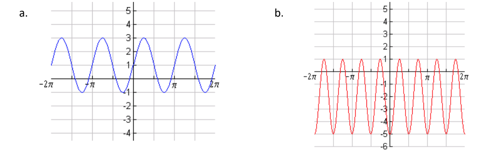

These exercises are intended to help you think more deeply about the important concepts on Midterm 1. You should not expect problems on the midterm to look exactly like these. The number of problems in this review is also not indicative of the length of the midterm. Use them as a starting place for your review and to prompt questions. Some solutions here just provide answers. You should be able to justify these answers on an exam with relevant work shown.
Compute \(f^{-1}(-2)\text{,}\)\(f(g(-3))\text{,}\)\(f(f(-1))\text{,}\)\((f+g)(-1)\text{,}\) and \((f\cdot g)(-1)\) using the graphs only. Then compute them using your equations from the previous part.
On an alien planet they use goops and snarks to measure volume. One goop is equal \(\frac{9}{7}\) times a snark. Pheobe the dog has a volume of 75 snarks. What is her volume in goops?
The functions below are all transformations of “parent” functions. First determine the “parent” function and sketch its graph. Then sketch the graph of the transformed function.
Suppose \(p_{0}=3.\) Use the updating function to find \(p_{3}\text{.}\) Then find the solution function that gives the number of fish (measured in thousands) as a function of time.
Identify an initial value for which the solution function increases. Identify an initial value for which the solution function decreases. In both cases, justify your answer using cob-webbing.
Find equations for each function below without using a phase shift.

On the left the graph of a periodic function with average y value 1, maximum y value 3, and minimum y value -1. It passes through (0,1). On the right the graph of a periodic function with average y value -2, maximum y value 1, and minimum y value -5. It passes through (0,-5).
A person breathes in and out \(0.75\)L of air each breath. Their lungs have \(3\) L of air when full. Let \(s_{t}\) denote the concentration of a certain chemical in the lungs after taking \(t\) breaths. The outside concentration of the chemical being measured is \(2\) mmol/L.
Examples of the following descriptions do not exist. Explain why.
An angle \(\theta\) such that \(\tan(\theta) = \cos(\theta) = 0\text{.}\) (You should reference what these quantities represent in the unit circle in your explanation.)
These exercises are intended to help you think more deeply about the important concepts on Midterm 1. You should not expect problems on the midterm to look exactly like these. The number of problems in this review is also not indicative of the length of the midterm. Use them as a starting place for your review and to prompt questions. Some solutions here just provide answers. You should be able to justify these answers on an exam with relevant work shown.
Compute \(f^{-1}(-2)\text{,}\)\(f(g(-3))\text{,}\)\(f(f(-1))\text{,}\)\((f+g)(-1)\text{,}\) and \((f\cdot g)(-1)\) using the graphs only. Then compute them using your equations from the previous part.
On an alien planet they use goops and snarks to measure volume. One goop is equal \(\frac{9}{7}\) times a snark. Pheobe the dog has a volume of 75 snarks. What is her volume in goops?
The relevant conversion factor is \(\frac{9/7 \text{ snark}}{1 \text{ goop}}\text{,}\) or equivalently \(\frac{9 \text{ snark}}{7 \text{ goop}}\text{.}\) Then
The functions below are all transformations of “parent” functions. First determine the “parent” function and sketch its graph. Then sketch the graph of the transformed function.
Suppose \(p_{0}=3.\) Use the updating function to find \(p_{3}\text{.}\) Then find the solution function that gives the number of fish (measured in thousands) as a function of time.
Identify an initial value for which the solution function increases. Identify an initial value for which the solution function decreases. In both cases, justify your answer using cob-webbing.
The updating function is graphed in Desmos. You can also choose different initial values to see how cobwebbing behaves. You should be able to see and explain that the solution function increases for initial values greater than \(1\text{,}\) and decreases for initial values less than \(1\text{.}\) The equilibrium value is \(1\text{,}\) and is unstable.
Find equations for each function below without using a phase shift.
On the left the graph of a periodic function with average y value 1, maximum y value 3, and minimum y value -1. It passes through (0,1). On the right the graph of a periodic function with average y value -2, maximum y value 1, and minimum y value -5. It passes through (0,-5).
A person breathes in and out \(0.75\)L of air each breath. Their lungs have \(3\) L of air when full. Let \(s_{t}\) denote the concentration of a certain chemical in the lungs after taking \(t\) breaths. The outside concentration of the chemical being measured is \(2\) mmol/L.
Examples of the following descriptions do not exist. Explain why.
An angle \(\theta\) such that \(\tan(\theta) = \cos(\theta) = 0\text{.}\) (You should reference what these quantities represent in the unit circle in your explanation.)
\(\cos(\theta)=0\) only for angles \(\theta\) that correspond to points on the unit circle that satisfy \(x=0\text{,}\) namely \((0,1)\) and \((0,-1)\text{.}\)\(\tan(\theta)\) is the slope of the secant line connecting \((0,0)\) to these points, which is undefined since the lines are vertical.
Use the graph of the function \(f(x)\) and the table of the invertible function \(k(x)\) to answer each question below. Write “UND” if a value is undefined.
Find the equilibrium point of this system algebraically. You must show the equation you are using to find the equilibrium point, as well as solve the equation.
Find the doubling-time or half-life for the object (whichever is appropriate based on your previous answer). You must show the equation you are using to find the doubling-time/half-life, as well as solve the equation.